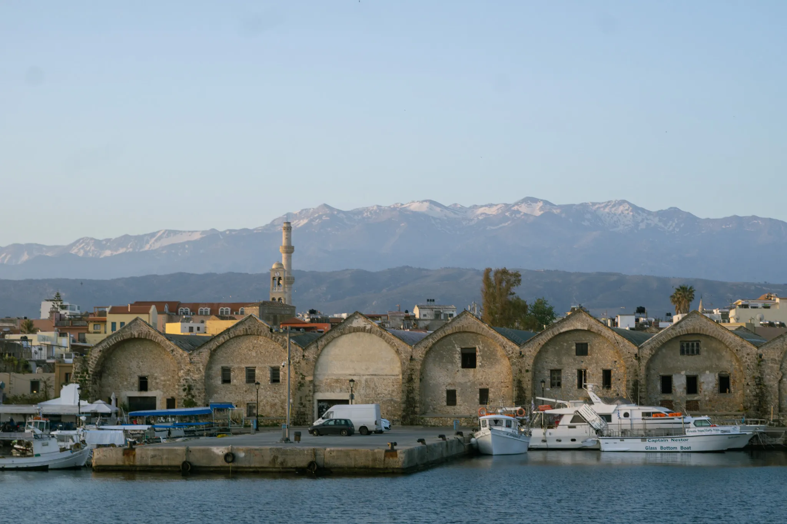
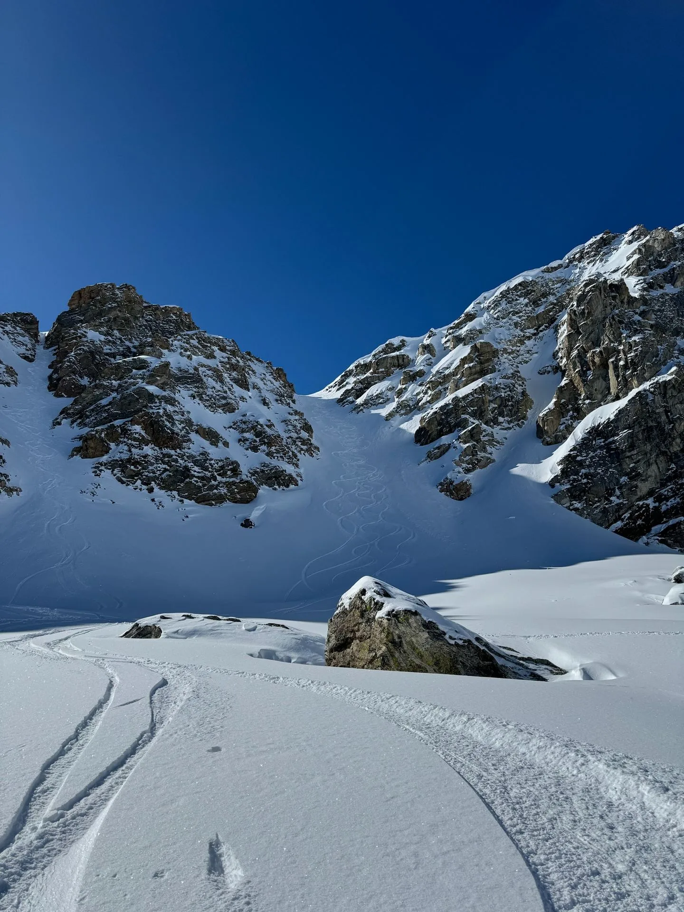
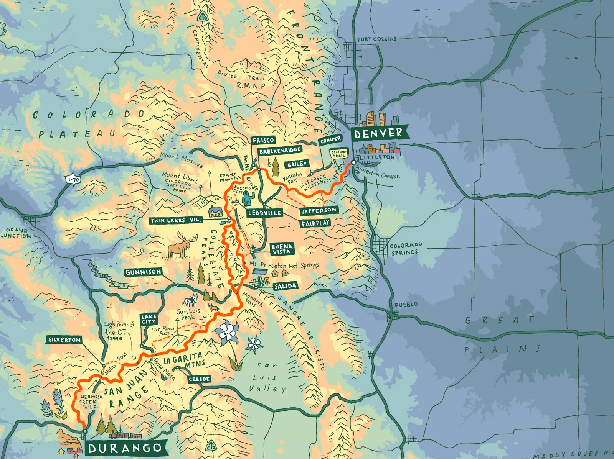

Journal
Sometimes I make maps and art about these trips.

April 2024
Two weeks spent on a stroll through the Greek Island of Crete.

2023 – 2024
Photos and maps from a winter spent in the snow in my backyard.

2021
Video and map art from a solo thru-hike of the Colorado Trail.